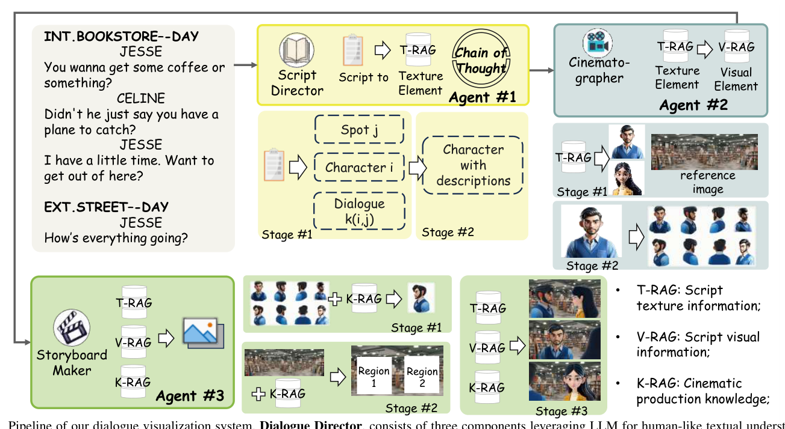
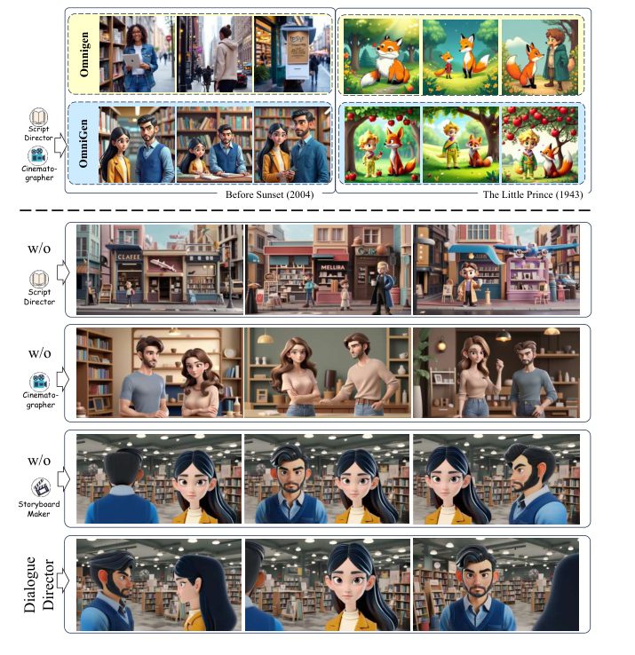
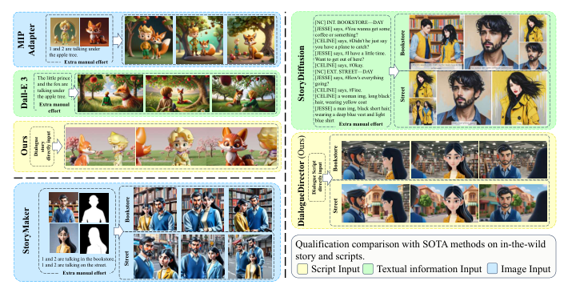

将对话脚本转化为动态、多视角分镜故事的免训练多模态框架
Recent advances in AI-driven storytelling have enhanced video generation and story visualization. However, translating dialogue-centric scripts into coherent storyboards remains a significant challenge due to limited script detail, inadequate physical context understanding, and the complexity of integrating cinematic principles.
本文提出 Dialogue Visualization 新任务，并设计 Dialogue Director —— 一个免训练的多模态框架，通过三个智能体协同工作，将对话脚本转化为动态、多视角的分镜故事板。
对话脚本中描述信息稀疏，隐含的多模态线索（表情、动作、场景）难以与视觉内容对齐
角色在不同镜头和视角下的外观、服装和朝向需保持一致，同时维持序列连贯性
分镜需遵循专业电影制作规范：合理布局、不越轴、镜头语言与对话匹配
LLM 增强扩散模型的提示工程与任务分解：RPG 做子区域规划，LayoutGPT 做布局规划，TaleCrafter 和 Anim-Director 优化空间-时间区域
不足：缺乏角色一致性与场景多样性
从 StoryGAN (GAN-based) 到扩散模型方法：StoryMaker (IP-Adapter)、StoryDiffusion (自注意力)、MIP-Adapter (多角色)、OmniGen (细粒度控制)
不足：侧重肖像生成，缺乏对话场景与多视角能力
现有方法在 角色肖像 上表现良好，但在 对话驱动场景、多视角一致性 和 电影知识整合 方面存在明显不足。
三个智能体协同工作：Script Director 负责语言推理，Cinematographer 负责视觉生成，Storyboard Maker 负责电影构图。整体框架 免训练（Training-free），即插即用。

T-RAG (Text RAG)：检索脚本文本/纹理信息，为后续生成提供精确的角色描述与场景细节
V-RAG (Visual RAG)：检索脚本视觉信息，辅助视觉生成保持一致性
K-RAG (Knowledge RAG)：检索电影制作知识，指导镜头选择与构图
使用 Stable Diffusion 1.5 基于精炼文本描述生成角色与场景参考图
利用 MV-Adapter 和 Hunyuan3D-1 生成 8 个视角 (0-7) 的角色肖像
通过 T-RAG 和 V-RAG 保持角色姿态、朝向与视觉表征的一致性
多视角生成确保对话场景中 过肩镜头、双人对镜 等电影视角的合理呈现，为 Storyboard Maker 提供丰富的视觉素材库。
为每段对话 D(i,j) 从多视角图库中选择最优视角 x(i,j)，匹配对话语境与角色关系
为角色与场景分配布局边界 B(i,j)，确保角色位置合理、不越轴、视觉焦点清晰
整合选定视角、布局边界、场景参考图与对话文本，通过 K-RAG 注入电影知识，合成最终分镜
Storyboard Maker 整合 对话文本、角色视角、场景图像和电影规则，确保叙事连贯性与视觉吸引力。
不使用 CLIP-I（无法有效评估侧视角）、PSNR/SSIM（与感知质量不相关），选择更贴合任务特点的指标体系。
| Approach | No Extra Effort | Detail Coherence | Cinematic Layout | NIQE ↓ | CLIP-T ↑ |
|---|---|---|---|---|---|
| MIP-Adapter | ✗ | ✗ | ✗ | 5.20 | 0.1543 |
| StoryDiffusion | ✗ | ✗ | ✗ | 3.91 | 0.2087 |
| StoryMaker | ✗ | ✗ | ✗ | 5.30 | 0.2140 |
| Ours | ✓ | ✓ | ✓ | 3.78 | 0.2240 |
Dialogue Director 在 NIQE 上取得 最优 (3.78)，在 CLIP-T 上同样领先 (0.2240)，且无需额外人工输入即可实现细节保持与电影布局。

| Approach | Use Dialogue Script Only | Complex Relationship ↑ | Physical Understanding ↑ | Knowledge of Cinema ↑ |
|---|---|---|---|---|
| OmniGen (text) | ✓ | 2.50 | 2.10 | 2.57 |
| OmniGen (image) | ✗ | 2.97 | 3.17 | 2.97 |
| MIP-Adapter | ✗ | 2.67 | 2.13 | 2.67 |
| StoryMaker | ✗ | 2.27 | 2.00 | 2.20 |
| StoryDiffusion | ✗ | 3.03 | 2.90 | 2.90 |
| Ours | ✓ | 3.67 | 4.00 | 3.47 |
30 名电影专业学生按 1-5 Likert 量表评估。Dialogue Director 在三项指标上均 大幅领先，尤其在物理理解 (4.00) 上超过第二名 0.83 分。
| Approach | No Extra Effort | Detail Coherence | Cinematic Layout | NIQE ↓ | CLIP-T ↑ |
|---|---|---|---|---|---|
| OmniGen (w/ text) | ✓ | ✗ | ✗ | 4.86 | 0.1442 |
| OmniGen (w/ image) | ✗ | ✓ | ✗ | 3.62 | 0.1867 |
| w/o Script Director | ✗ | ✗ | ✗ | 3.96 | 0.1419 |
| w/o Cinematographer | ✗ | ✗ | ✗ | 4.51 | 0.1332 |
| w/o Storyboard Maker | ✗ | ✓ | ✗ | 4.09 | 0.2096 |
| Ours (Full) | ✓ | ✓ | ✓ | 3.78 | 0.2240 |
三个智能体均不可或缺：去除 Script Director 导致 CLIP-T 最低 (0.1419)，去除 Cinematographer 导致 NIQE 最差 (4.51)，去除 Storyboard Maker 导致布局不合理。三个组件即插即用，可增强其他方法。
